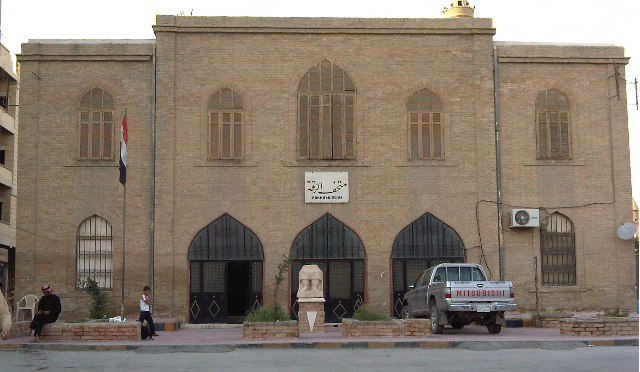

Musée de Raqqa

Le Musée de Raqqa, fondé en 1981, est dédié à la conservation et à l'exposition du patrimoine archéologique de la province d’Ar-Raqqah.
Le musée conserve notamment les objets des fouilles menées dans la région: Tell Sabi Abyad, Tell Bi’a, Tell Chuera, Tell Munbaqa et divers objets des époques
allant jusqu’aux Romains et aux Byzantins, ainsi que des objets plus récents datant de la période islamique (notamment de l'époque de Haroun al-Rachid) et de la domination bédouine.
|